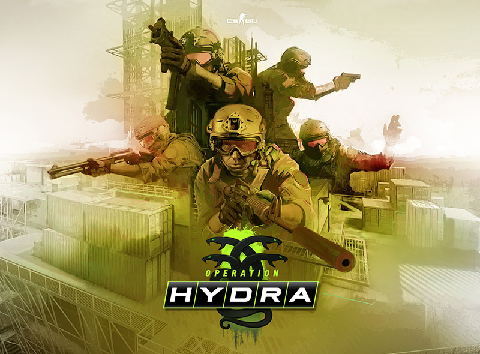
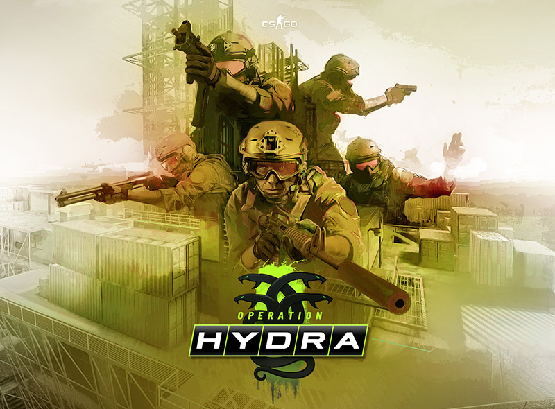

Wstęp
Seria Counter-Strike towarzyszy graczom od 1999 roku. Początkowo jako fanowska modyfikacja gry Half-Life, szybko zyskała rzeszę oddanych fanów, a co za tym idzie, wsparcie samych twórców zmodowanej gry. Rozgrywka opiera się na walce antyterrorystów z terrorystami, w której jedna ze stron musi bronić określonych miejsc na mapie lub uratować zakładników, a druga podłożyć bombę albo pilnować pojmanych.
Gra została stworzona z myślą o grze sieciowej. Odkąd otrzymała wsparcie od Valve, jest ciągle uaktualniana i stała się areną wielu turniejów e-sportowych.
Oś czasu
2012
Historia CS:GO zaczyna się od wydania tej gry przez amerykańskie studio Valve 21 sierpnia 2012 roku. Gra stała się następcą Counter-Strike: Source oferującą ulepszoną szatę graficzną, wspierany przez twórców system rankingowy z dedykowanymi serwerami i anti-cheatem, kilkoma trybami gry, nowym granatem zapalającym i regularnymi aktualizacjami z nowymi zawartościami.
Początkowo CS:GO nie spotkał się z ciepłym przyjęciem przez fanów, którzy wciąż woleli klasycznego Counter-Strike'a 1.6 i popularną za oceanem wesję Source. Dostępna była niewielka liczba broni oraz pięć map (de_dust2, de_train, de_mirage, de_inferno oraz de_nuke). Jednak wkrótce miało się to zmienić dzięki nadchodzącym aktualizacjom, które odmieniły oblicze serii na zawsze.
2013
Do końca roku 2013 Counter-Strike: Global Offensive wyprzedał się w liczbie 25 milionów kopii, a liczba ta stale rosła. Gracze chwalili CS:GO za dynamikę połączoną z przystępnością przy jednoczesnym zachowaniu ducha gry z poprzednich odsłon serii. Dostarczone przez Valve aktualizacje znacząco odmieniły omawianą odsłonę gry od swoich poprzedników z ubiegłych lat.
Operacja Payback
25 kwietnia zostaje wypuszczona pierwsza z wielu nadchodzących operacji, będącymi czymś w rodzaju periodycznych eventów dostępnych dla graczy za dodatkową opłatą. Gracz, który zyskał dostęp do operacji, dostawał również symboliczny żeton na swoim profilu, a co za tym idzie, fabularne misje do wypełnienia. Im więcej misji wypełnił gracz, tym wyższy stopień jego żetonu operacji. Ponadto, na czas operacji wprowadzonych zostało osiem najlepiej ocenianych przez społeczność fanowskich map, na których zagrać mogli wszyscy gracze.
Overwatch
W maju dodany został system Overwatch, mający na celu ograniczenie ilości cheaterów w grze. Charakteryzował się oglądaniem nagrań meczów graczy podejrzanych o oszustwa przez resztę społeczności gry, która następnie na podstawie obejrzanego nagrania decydowała o winie podejrzanego. Niestety, system\ początkowo nie cieszył się powodzeniem ze względu na brak nagród za zgłaszanie podejrzanych graczy, jednak zostało to zmienione w następnych latach.
Arms Deal Update
13 sierpnia Valve wydało poważną aktualizację nazwaną Arms Deal Update. Wprowadziła ona do gry coś przełomowego, a mianowicie wykończenia broni, tak zwane skórki lub skiny. Skórki można otrzymać losowo pod koniec meczów rankingowych lub poprzez otwarcie skrzynek, będących czymś w rodzaju popularnych w innych grach lootboxów (klucze używane do ich otwarcia można zakupić bezpośrednio na platformie Steam). Spowodowało to powstanie wirtualnego rynku, na którym gracze mogą wymieniać, kupować i sprzedawać posiadane skórki za prawdziwą walutę. Skórki dzieliły się na kilka jakości, z których te najrzadsze były najczęściej najbardziej pożądane, a co za tym idzie - najdroższe. Wyjątkowymi skórkami były skórki do noży, potrafiące osiągnąć zawrotne ceny rzędu kilkudziesięciu, a nawet kilkuset tysięcy złotych. Opróćz tego do gry zostały dodane dwie nowe bronie, M4A1-S oraz USP-S, charakteryzujące się nałożonymi tłumikami.
Pierwszy Major
Major jest skróconą nazwą rodzaju turniejów e-sportowych sponsorowanych przez Valve, zazwyczaj z pulą nagród większą od tych oferowanych na pozostałych turniejach. 16 września, miesiąc po opublikowaniu aktualizacji Arms Deal, Valve ogłosiło zorganizowanie pierwszego takiego turnieju w Szwecji. Pula nagród wynosiła wówczas 250 tysięcy dolarów i była w tamtych czasach zawrotną kwotą jak na turniej e-sportowy. Nagroda została częściowo sfinansowana z przychodu po niedawnej aktualizacji, a Global Offensive zyskał światowy rozgłos.
Operacja Bravo
19 września rozpoczęła się kolejna operacja nazwana Operacją Bravo. Podobnie jak Operacja Payback dodała ona do gry osiem nowych map, a także legendarną już Skrzynię Operacji Bravo. Limitowane skrzynie ze skórkami przyznawane były graczom za ukończone misje, aczkolwiek można było je również zdobyć na drodze losowych dropów na koniec meczów rankingowych.
Winter Offensive
W grudniu CS:GO doczekał się dużej aktualizacji dodającej z powrotem uwielbianą przez graczy mapę de_cobblestone,a także zupełnie nową de_overpass. Był to również początek dużego projektu rekonstrukcji starych map pamiętających czasy CS 1.6 i CS: Source, aby rzucić na nie nowe światło i podnieść ich jakość do standardów Global Offensive.
2014
W roku 2014 CS:GO jeszcze bardziej umocnił swoją dominację na rynku gier FPS. Trend wzrostowy był wyraźnie zauważalny na platformach streamingowych typu Twitch.tv, a także w serwisie YouTube, gdzie gra zyskała szczególną popularność w kręgu polskich twórców. Do sukcesu CS:GO w naszym kraju przyczynił się polski zespół e-sportowy Virtus.pro, który w marcu zatriumfował nad drużyną Ninjas in Pyjamas w finale turnieju rangi Major zorganizowanym w katowickim Spodku. Drużyna urosła do miana legendy i znakomita większość osób zainteresowanych e-sportem na pewno kojarzy jej nazwę. Ponadto do gry zostały dodana nowa broń, CZ75-Auto, początkowo zastępująca pistolet P250, a następnie Five-Seven lub Tec-9.
Operacja Phoenix
Trzecia wydana w CS:GO operacja, nazwana Operacją Phoenix, dodała nową skrzynię oraz osiem znanych z wcześniejszych operacji map społeczności. Ze względu na powtarzające się mapy, przepustka tej operacji została wyceniona na 2,99 dolarów, co czyni ją najtańszą ze wszystkich operacji w historii gry.
Operacja Breakout
Operacja Breakout dodała do gry na stałe znaną z poprzednich operacji mapę de_cache, która umieszczona została w mapach czynnej służby, czyli grupie map rozgrywanych na turniejach e-sportowych oraz w meczach rankingowych. Została tam przeniesiona razem z mapami de_cobblestone i de_overpass, zwiększając liczbę map z pięciu do ośmiu. Ze względu na konieczność przebudowy, z puli map turniejowych usunięty został de_train, pozostawiając w puli siedem map.
Zestawy utworów
Aktualizacja z 10 października wprowadziła do gry zestawy utworów możliwe do nabycia bezpośrednio w grze lub na wtórnym rynku Steam. Podmieniają one całkowicie muzykę w grze, a przy okazji zdobycia gwiazdki MVP odgrywana jest posiadana przez danego gracza muzyka, którą słyszą wszyscy na serwerze.
Olofboost i kontrowersje na Majorze
Ćwierćfinał rozgrywanego w listopadzie Majora DreamHack Winter 2014, a konkretniej mecz fnatic - LDLC na finałowej mapie de_overpass zakończył się skandalem po tym, jak gracz zespołu fnatic o pseudonimie olofmeister wykorzystał ze swoją drużyną tzw. pixel bug, czyli błąd mapy polegajacy na umożliwieniu graczowi dostępu do niewidzialnego miejsca na planszy, dzięki któremu zyskuje on znaczną przewagę nad przeciwnikami. Fnatic zrobiło comeback z wyniku 3-12 na 16-13, wygrywając przy tym cały mecz i eliminując drużynę LDLC z turnieju. Przegrana drużyna zgłosiła organizatorowi zażalenie, argumentując je nieczystą grą przeciwnika i żądając powtórzenia mapy. Ostatecznie zespół fnatic poddał mecz, a drużyna LDLC wkrótce wygrała cały turniej.
Operacja Vanguard
11 listopada wystartowała Operacja Vanguard dodająca do gry sześć całkowicie nowych map społeczności oraz przywracająca do puli map czynnej służby zrekonstruowaną mapę de_train. Przerobiona mapa zastąpiła przestarzałego de_nuke, który skierowany został na dogłębną przebudowę. Operacja Vanguard składała się z czterech kampanii, z czego dwie z nich były dodatkowo płatne, co spowodowało poruszenie w społeczności gry.
2015
Trzeci rok Global Offensive cechował się szczytowym zainteresowaniem grą (w grudniu liczba użytkowników grających w tym samym czasie przekroczyła 800 tysięcy), ogromnym skokiem jej popularności w Polsce (w CS:GO grali wówczas najwięksi polscy twórcy YouTube'a na czele z Piotrem izakiem Skowyrskim) i rekordami popularności transmisji z gry w serwisie Twitch. Szczególnie popularne stały się tzw. openingi, podczas których osoby otwierały skrzynki w celu wylosowania drogich skinów. Otwieranie skrzynek generowało ogromne pieniądze dla Valve, sprawiając, że Counter-Strike stał się jednym z głównych źródeł dochodów firmy. Dla wielu starych graczy rok 2015 opisywany jest jako najbardziej nostalgiczny.
Skandal z ustawianiem meczów
16 stycznia dziennikarz e-sportowy Richard Lewis opublikował głośny artykuł o ustawianiu meczów przez członków amerykańskiej drużyny iBUYPOWER w sierpniu 2014 roku. Dowody zebrane przez autora tekstu były niezbite, a Valve zareagowało natychmiastowo. Wszyscy zamieszani w skandal zostali bezterminowo zbanowani z wszelkich turniejów organizowanych przez studio, co poskutkowało rozszerzeniem bana przez inne organizacje e-sportowe, a finalnie rozpadem drużyny iBUYPOWER i wycofaniem się organizacji ze świata e-sportu.
Operacja Bloodhound
26 maja rozpoczęła się długo wyczekiwana Operacja Bloodhound. Wraz z operacją do gry została dodana zupełnie nowa mechanika punktów doświadczenia i poziomów gracza, które od tamtego momentu definiowały kiedy dany gracz dostanie dropa, a także Skrzynia Falcjonu, a w niej nowy rodzaj skórek do noży. System Overwatch został przystosowany do nowej mechaniki nagradzając gracza punktami doświadczenia za prawidłowe werdykty. Zaktualizowane zostały również hitboxy (niewidoczne modele kolizyjne odpowiadające za rejestrowanie trafionych strzałów), które zmieniły kształt z prostopadłościanów na bardziej cylindryczne i dopasowane do graficznch modelów postaci.
Kontrowersja Rewolweru
W grudniu w ramach aktualizacji świątecznej do gry została dodana nowa broń potencjalnie zastępująca popularny pistolet Desert Eagle, a mianowicie Rewolwer R8. Broń zadawała ogromne, wręcz nieproporcjonalne obrażenia, co spowodowało ogromne kontrowersje w społeczności graczy, którzy opisywali ją jako niezbalansowaną, nieprzewidywalną i po prostu nieprzemyślaną. Dwa dni po wydaniu Rewolwera, Valve wypuściło aktualizację korygującą nową broń, znacznie ją osłabiając i przywracając balans w rozgrywkach. Po tej aktualizacji mało kto używał Rewolweru, a gracze wybierali pistolet Desert Eagle ze względu na jego wysoką stabilność kosztem nieco mniejszych w porównaniu do Rewolwera obrażeń.
2016
Rok 2016 w CS:GO był rokiem kontrowersyjnych aktualizacji i frustracji społeczności ze względu na wydłużający się brak nowego contentu, coraz dłuższe przerwy między operacjami, stare, nienaprawione problemy i stagnację liczby aktywnych graczy, która od połowy roku zaczęła systematycznie spadać. Twórcy gry wielokrotnie próbowali dodać nowe treści, aczkolwiek zwykle spotykali się oni z brakiem zainteresowania lub oburzeniem ze strony graczy.
Operacja Wildfire
17 lutego nadszedł czas Operacji Wildfire. Dodała ona siedem nowych map społeczności i przywracała mapę de_nuke, będącą w przebudowie od końca 2014 roku. Nowy nuke zszokował graczy ze względu na swoją nowoczesną szatę graficzną, dalece odbiegającą od tradycyjnej, znanej już od 1999 roku. Wielu graczy skrytykowało autorów mapy za przesadne skomplikowanie czegoś, co w przeszłości było jedną z najprzyjemniejszych plansz w grze. Mimo wielokrotnych prób uproszczenia tejże mapy w późniejszych latach, de_nuke na dobre wyłamał się z czołówki najpopularniejszych map Counter-Strike'a.
Status Prime
W czerwcu wprowadzony został Status Prime mający na celu oddzielić nowych użytkowników (często też oszustów) od dłużej grających, uczciwych graczy. Status był możliwy do zdobycia na dwa sposoby: poprzez osiągnięcie 21. poziomu konta lub jego zakupu za kwotę około 50 złotych. Decyzja ta jeszcze bardziej podburzyła społeczność CS:GO, która zaczęła uważać studio Valve za głodne pieniędzy i lekceważące prawdziwe potrzeby gry. W krótkim czasie Valve zmieniło zasady nabywania statusu, który od tego momentu możliwy był do zdobycia tylko poprzez osiągnięcie 21. poziomu oraz przypisanie numeru telefonu do konta Steam.
Zepsute hitboxy
Latem 2016 roku gracze CS:GO odkryli dziwne błędy w systemie hitboxów. W wielu przypadkach były one tak przesunięte względem modelu graficznego, że gra rejestrowała trafienie nawet wtedy, gdy atakujący celował wysoko nad głową oponenta, a nie rejestrowała go, gdy atakujący celował prosto w głowę. Zostało to naprawione w rekordowo krótkim czasie (poniżej 24 godzin), a podobny problem nie wystąpił już nigdy.
Nowe dźwięki
Pod koniec września wydana została aktualizacja drastycznie zmieniająca dźwięki wystrzałów wszystkich broni w ramach zwiększenia ich jakości i realizmu. Ta aktualizacja również spotkała się z negatywnym odbiorem przez większość graczy, jednak w dużej mierze spowodowane to było poczuciem nostalgii i niechęcią do zmiany tak podstawowych rzeczy jak dźwięk. W ramach uzupełnienia aktualizacji, w grudniu nastąpiła dodatkowa przeróbka dźwięków, tym razem w ramach implementacji systemu HRTF, aby lepiej symulować odgłosy poza zasięgiem wzroku.
Graffiti
6 października do gry zostały dodane znane i lubiane w poprzednich odsłonach gry graffiti. Zostały one jednak zmienione do tego stopnia, że gracze nie zainteresowali się nową funkcją w przeciwieństwie do oczekiwań Valve. W odróżnieniu od CS 1.6 i CS:S, a także innych produkcji firmy, takich jak Team Fortress 2, treść graffiti była narzucona odgórnie przez dostępne w grze (zazwyczaj płatne) wzory, a umieszczanie ich na mapach limitowane do jednego na minutę. Liczba użyć graffiti również miała narzucony limit - po dziś dzień wynosi on pięćdziesiąt.
Skrzynia Rękawic
W listopadzie dodana została kolejna skrzynia, a co za tym idzie, nowy przedmiot kosmetyczny w postaci rękawic. Rękawice, podobnie jak noże, oznaczane były jako niezwykle rzadki przedmiot specjalny, co dodatkowo napędziło rynek skinów. Większość graczy jednak raz jeszcze utwierdziła się w przekonaniu, że studio Valve zainteresowane jest dodawaniem urozmaiceń, które jedynie zasilą jego portfel.
2017
Rok 2017 w świecie Counter-Strike owocował w wiele świeżych dodatków i jeszcze więcej poprawek. Zbalansowane zostały zarówno stare i nowe bronie, z czego najbardziej rewolucyjne była zmiana sposobu gry ciężkim karabinem maszynowym Negev oraz znaczne obniżenie jego ceny. Mimo to liczba graczy zmalała z 800 tysięcy na początku stycznia do niecałych 600 tysięcy pod koniec grudnia. Był to również ostatni rok, w którym polska ekipa Virtus.pro zaprezentowała się na turnieju rangi Major z dobrej strony.
Nowe de_inferno
Kolejnym krokiem na drodze odświeżenia map było przywrócenie do gry de_inferno w całkowicie nowej odsłonie. Mapa nabrała kolorów i tekstur o wysokiej rozdzielczości, a ponadto przebudowano najważniejsze dla rozgrywki miejscówki. Spotkało się to z oczywistą krytyką, do której twórcy byli jednak przyzwyczajeni. Po przywróceniu de_inferno do grupy map czynnej służby, usunięty został równie popularny de_dust2.
Operacja Hydra 
23 maja zaczęła się Operacja Hydra, na którą gracze CS:GO musieli czekać prawie rok. Przyniosła ona do gry tryb Skrzydłowy, przypominający skróconą wersję zwykłego meczu rankingowego rozgrywanego w formacie 2v2, a także pomniejsze tryby Ekspert broni i Gry wojenne, dzielące się sześć pomniejszych trybów. Mimo, że nowa zawartość bardzo spodobała się społeczności, a tryb Skrzydłowy został dodany do gry na stałe, Global Offensive wciąż zaliczał poważne spadki aktywnych graczy, które spadły do poziomu poniżej 600 tysięcy pod koniec roku.
Rework de_dust2
W październiku wydany został nowy, upiększony de_dust2. Niegdyś najpopularniejsza mapa w grze, jej odświeżone wydanie charakteryzowało się, podobnie jak de_inferno, teksturami o większej rozdzielczości, dopracowanymi detalami i drobnymi zmianami w strukturze samej mapy.
2018
Rok 2018 to dla CS:GO okres szczególny. Ciągle spadająca liczba graczy wymusiła na Valve podjęcie radykalnych kroków w celu odwrócenia trendu, które zostały ocenione w sposób bardzo mieszany. Zmiany te jednak się utrzymały, a gra powoli zaczęła odżywać.
Panorama UI
19 czerwca do gry została wydana zapowiadana od dawna aktualizacja kompletnie przebudowująca jej interfejs. Nazwana została Panorama i radykalnie zmieniła wygląd menu głównego CS:GO, a także UI w czasie rozgrywanych meczów. Użytkownicy entuzjastycznie ją przyjęli, opisując stary interfejs jako przestarzały i nieczytelny.
MP5-SD
15 sierpnia została dodana nowa broń potencjalnie zastępująca pistolet maszynowy MP-7. Było to znane z poprzednich odsłon gry MP5-SD. Broń charakteryzowała się ogromną celnością i tłumikiem, jednak nie zyskała zbyt dużej popularności, a w dzisiejszych czasach rzadko można spotkać graczy jej używającej.
Forsaken i koniec indyjskiej sceny
W październiku rozgrywany był w Szanghaju turniej eXTREMESLAND 2018, w którym brało udział wiele drużyn azjatyckich. Wśród nich zakwalifikowana była obiecująca drużyna OpTic India, która przez wielu uważana była za faworyta do wygrania całego wydarzenia. Jednak podczas jednego z meczów fazy grupowej wyszło na jaw, że gracz OpTic, forsaken, używa zabronionego w grze aimlocka. Drużyna została natychmiastowo zdyskwalifikowana, a wkrótce po tym drużyna OpTic India została rozwiązana. Do tej pory nikt nie zainteresował się indyjskimi graczami ponownie, sprawiając wrażenie, że forsaken permanentnie zepsuł reputację Indii na arenie Counter-Strike'a.
Danger Zone i przejście na model free to play
6 grudnia wypuszczona została prawdopodobnie najbardziej przełomowa aktualizacja w historii gry. Zmieniała ona model CS:GO na free to play, jednocześnie utrzymując wprowadzony wcześniej status prime. Dodany został również tryb Danger Zone, będący popularnym wówczas trybem battle royale. Społeczność przyjęła aktualizację bardzo entuzjastycznie, a gra zanotowała pierwszy od dawna wzrost aktywnych graczy.
2019
Kolejny rok nie obfitował w zbyt wiele nowości, a twórcy gry skupili się głównie na usprawnianiu i dodawaniu map do trybu Danger Zone. Wycofana została również mapa de_cobblestone, którą zastąpiło nowe de_vertigo.
Operacja Shattered Web
Nowa operacja rozpoczęła się 18 listopada, a więc półtora roku po ostatniej operacji Hydra. Od razu była przedmiotem kontrowersji z uwagi na swoją wysoką cenę (14,99 dolarów) i mniejszą zawartość względem poprzedniczki. Dodane zostały jedynie trzy tryby, za to całkowitą nowością stały się skiny agentów, czyli postaci, którymi grają użytkownicy Najdroższe z nich posiadają unikalne komendy głosowe i animacje wykonywane po wygranym meczu. Zmianom uległ także format operacji, która od tej pory składała się z pomniejszych misji możliwych do zrealizowania podczas gry z innymi graczami, za ukończenie których dostawało się gwiazdki. Gwiazdki zastąpiły tradycyjne dropy skrzyń operacji, służąc do wymiany na rozmaite nagrody.
2020
Rok 2020 to rok panującej na świecie pandemii, która spowodowała masywny wzrost graczy i innych użytkowników komputerów. CS:GO po raz pierwszy w swojej historii przekroczył próg miliona aktywnych w tym samym momencie graczy, ustanawiając rekord na poziomie 1,3 miliona.
Afera coaching buga
26 sierpnia trener e-sportowej dywizji Wisły Kraków Mateusz Loord Cybulski upublicznił informacje wskazujące na używanie przez wielu trenerów drużyn CS:GO tak zwanego coaching buga, polegającego na niewykrywalnym podglądaniu przez nich określonych pozycji na mapie. Wkrótce po tym Valve zainterweniowało i nałożyło odpowiednie kary (najczęściej w postaci czasowych banów) na dziesiątki trenerów.
Operacja Broken Fang
Kolejna operacja została dodana po nieco ponad roku od operacji Shattered Web, a konkretnie 3 grudnia. Wraz z nią dodane zostały, tym razem na stałe, tryb Odbijania i tryb Premier. Odbijanie polega na symulowaniu odbijania zajętego bombsite'a przez siły antyterrorystów na skróconych wersjach popularnych map, natomiast tryb Premier stanowi symulację banowania map jak na prawdziwych turniejach e-sportowych. Poza tym operacja dodała nową skrzynię i kolejne skiny do agentów.
2021
Końcowe lata CS:GO nie przynosiły już tak rewolucyjnych zmian jak lata wcześniejsze. Dodana została subskrypcja CS:GO 360 Stats, która za niewielką miesięczną opłatę pozwalała podejrzeć szczegółowe statystyki gracza. Ponadto, mapa de_train zastąpiona została mapą de_ancient.
Operacja Riptide
Ostatnia operacja w Global Offensive rozpoczęła się 21 września. Nie różniła się za bardzo od operacji Broken Fang, a jej motywem przewodnim byli piraci i kraje Ameryki Południowej.
2022
Przedostatni rok gry przepełniony był poprawkami do map i usprawnieniami silnika gry, a de_dust2 został wymieniony na całkowicie nowego de_anubis. Liczba graczy utrzymywała się na poziomie ponad miliona.
2023
Ostatnie miesiące Global Offensive były wybitnie ubogie w aktualizacje (było ich tylko osiem). Valve skupiło się na dopracowywaniu nowej odsłony Counter-Strike'a, czyli CS2. Mimo to, został pobity rekord liczby jednoczesnych graczy, który od tej pory stanowił 1,8 miliona osób.
Serwery CS:GO zostały ostatecznie wyłączone w nocy z 27 na 28 września, a grę żegnało setki tysięcy fanów. Mimo wielu afer, skandali i błędów jest to nadal najbardziej doceniana gra studia Valve.


 
